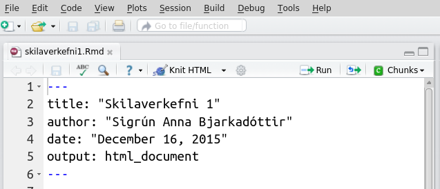

12. Knitr
Í kafla 1 er fjallað um hvernig við getum framkvæmt tölfræðiúrvinnslu með því að skrifa skipanir í skipanaskrá (.R). Ef við þurfum að skrifa skýrslu, grein eða annað þar sem úrvinnslunni og niðurstöðum hennar er lýst þyrftum við að færa niðurstöðuna inn í það umhverfi sem við kjósum að nota til að skrifa skýrsluna (Word, LibreOffice, LaTeX, …). Í því felst að afrita (e. copy) niðurstöður frá R og líma (e. paste) þær svo inn í viðkomandi ritvinnsluforrit. Ýmislegt getur farið úrskeiðis í því ferli.
Pakkinn knitr gerir okkur kleift að prjóna saman texta, fagrar
jöfnur og R-kóða í eitt og sama skjalið. Helsti kosturinn er að
greiningin sem við erum að framkvæma fléttast inn í textann og óþarfi er
að klippa og líma úttök, myndir og töflur úr R inn í annað
ritvinnsluforrit. Annar stór kostur er að greiningin uppfærist
sjálfkrafa þó svo að gögnin sem notast er við breytist, ekki þarf að
endurgera töflur og myndir og líma þær á ný inn í skýrsluna.
Áður en pakkinn er notaður þarf að hlaða honum niður með
install.packages() eins og aðra pakka. Hér verður stiklað á stóru um
notkun pakkans en lesa má meira um pakkann hér:
Ef þið lendið í vandræðum með að sækja pakkann er sennilegt að þið séuð ekki með nýjustu útgáfuna af R og eða RStudio, þá þurfið þið að uppfæra útgáfurnar ykkar.
Eins og kom fram hér að ofan er greiningin og skýrslan unnin í einu og
sama skjalinu þegar unnið er með knitr. Það fer eftir því hvaða tæki
og tól við viljum nota við umbrot á textanum og hvaða snið (format) við
kjósum á skýrslunni okkar (.pdf, .docx eða .html) af hvaða
gerð skjalið sem við vinnum í verður (.Rmd eða .Rnw). Vinnulagið
er svipað en í öllum tilvikum mun skjalið okkar samanstanda af haus
(e. preamble), texta, R-klumpum (e. R-chunks) og mögulega jöfnum skrifaðar í
LaTeX. R-kóði sem við viljum að sé keyrður þarf að vera í R-klumpum í
skjalinu okkar, annars er litið á hann sem venjulegan texta. Þó er
einnig er hægt að kalla á R-úttök í textann en hvernig að þessu er
staðið fer eftir hvaða snið er valið.
12.1. Umbrot á texta
Áður en vinnslan hefst er nauðsynlegt að ákveða hvaða tól eigi að nota
við umbrot á texta og á hvaða sniði skýrslan á að vera. LaTeX notendur
geta á auðveldan hátt prjónað saman LaTeX kóða og R-kóða en það er ekki
nauðsynlegt að tileinka sér LaTeX til að nota knitr. Annar möguleiki
er til staðar en það er að nota ívafsmálið (e. markup language) Markdown en
það er mjög einfalt í notkun.
12.1.1. Markdown (.html eða .docx)
Til að búa til nýja R-Markdown skrá í RStudio veljið File,
New File og R Markdown. Þar eruð þið beðin um að velja á hvaða
sniði skýrslan á að vera. Ef Word er valið þarf Word að vera uppsett
á vélinni. Ef PDF er valið þarf TeX að vera uppsett á vélinni.
Ávallt er hægt að velja HTML. Til verður .Rmd- skrá. Skráin sem
opnast inniheldur sýnishorn af nokkrum skipunum sem þið getið eytt. Þið
skuluð þó halda í hausinn, þar sem þið setjið inn nafnið ykkar og titil
á skýrsluna. Gætið þess að breyta ekki hausnum of mikið eftirá, það gæti
valdið villum sem orsaka það að skjalið keyrist ekki.

Þegar .Rmd skrá er opnuð í RStudio birtist Knit HTML eða
Knit Word takki (í efri vinstra glugganum) eftir því hvaða snið var
valið. Þegar ýtt er á takkann keyrast allar R-skipanir sem eru innan í
R-klumpum nema annað sé sérstaklega tekið fram (sjá hér að neðan). Til
verður .html eða .docx skjal sem ber sama heiti og .Rmd
skráin ykkar. Nýju skrána má finna í sömu möppu og .Rmd skrána
ykkar. Þið verðið að vista (e. save) .Rmd skrána ykkar áður en þið ýtið
á Knit HTML takkann. Ef eitthvað er ekki eins og það á að vera
birtast rauð villuskilaboð í keyrslugluggann og ekki verður til
.html/.doc - skjal. Skoðið villuskilaboðin, lagið villuna og
ýtið svo aftur á Knit takkann.
Eins og fram kom hér að ofan skrifum við R-kóða í klumpa. Við byrjum
R-klump á ```{r} svo skrifum við R-skipun/skipanir og til að loka
klumpnum notum við ```. Línurnar tvær má fá á auðveldan hátt með að
velja Chunks og Insert chunks eða halda niðri Ctrl, Alt og
I. Hér er dæmigerður R-klumpur í .Rmd skrá:
```{r}
puls<-read.table("pulsAll.csv",sep=";",header=T)
```
Þær R-skipanir sem eru í klumpum keyrast þegar ýtt er á Knit takkann
nema annað sé tekið fram (sjá hér að neðan). Sé skipun ekki hluti af
R-klump er litið á hana sem venjulegan texta. Úttök þeirra skipana sem
eru í klumpunum birtast svo í skýrslunni (svo sem töflur og myndir).
Hlutir sem er smíðaðir í klumpum verða ekki til í vinnusvæðinu okkar en
til að búa þá til þar þurfum við að keyra þær skipanir á sama hátt og
áður (með að halda niðri ⌘ + ⏎ á MacOs en Ctrl + ⏎ á Windows/linux). Einnig er hægt að
keyra allar R-skipanirnar í einu með að velja Chunks og Run All.
Það er líka hægt að að láta R reikna fyrir okkur og birta svarið inn í
texta. Viljum við t.d. tilgreina gildið á meðalhæð einstaklinganna í
puls gagnasafninu getum við skrifað eftirfarandi í .Rmd skrána
okkar:
Meðalhæð einstaklinganna er `r mean(puls$haed)`
og útkoma mean(puls$haed) mun birtast í .html skjalinu.
Það er fyrir utan efni þessarar bókar að fjalla í smáatriðum um ívafsmálið Markdown. Aðeins verður fjallað um það helsta hér en við hvetjum ykkur til að skoða efni sem finna má á netinu.
Fyrstu línurnar í .Rmd skjali geta verið eftirfarandi:
---
title: "Skilaverkefni"
author: "Sigrún Anna Bjarkadóttir - sigrunannabjarka@hi.is"
output: html_document
---
Þið ráðið hvort þið hafið dagsetninguna líka inni.
Við notum myllumerki (#) til að tákna fyrirsagnir. Letrið minnkar með fleiri myllumerkjum:
# Þetta verður mjög stór fyrirsögn
## Þessi fyrirsögn verður minni
### Þessi fyrirsögn verður enn minni
Auðvelt er að skáletra og feitletra orð:
*Þetta verður skáletrað* og **þetta verður feitletrað** en þessi
texti verður hvorki skáletraður né feitletraður.
Viljum við útbúa lista gerum við það svona:
Trallalallalaaa
- það þarf að passa að það sé
- auð lína fyrir ofan og neðan...
Dúddiraríreiii.
12.1.2. LaTeX (.pdf)\(^\ast\)
Það er fyrir utan efni þessara bókar að kenna á LaTeX en finna má ógrynni af efni um LaTeX á netinu. Í þessum undirkafla er því gert ráð fyrir LaTeX kunnáttu.
Áður en knitr kom á markaðinn mátti nota Sweave til að tvinna
saman LaTeX og R-kóða. Það má vera að áður en R-LaTeX skrá er keyrð í
fyrsta skipti þurfi að breyta stillingu í RStudio. Það er gert með að
velja Tools, Global Options og í vinstri stikunni velja
Sweave svo Weave Rnw files using og velja knitr - þetta þarf
aðeins að gera einu sinni.
Til að búa til nýja R-LaTeX skrá í RStudio veljið File, New File
og R Sweave. Þá verður til .Rnw skrá. Í henni má finna lítinn
haus (e. preamble) og enda (e. postamble). Hægt er að vinna með þennan haus
eða líma þann haus sem þið eruð vön að nota inn í skjalið. Þið getið svo
notað þær LaTeX skipanir sem þið eruð vön að nota en bætið svo við
R-klumpum með greiningunni ykkar. R-klumparnir eru ekki á sama formi og
þegar Markdown er notað.
Við byrjum R-klump á <<>>= svo skrifum við R-skipun/skipanir og til
að loka klumpnum skrifum við @. Línurnar tvær má fá á auðveldan hátt
með að velja Chunks og Insert chunks eða halda niðri
Ctrl, Alt og I. Hér er dæmigerður R-klumpur í .Rnw skrá:
<<>>=
puls<-read.table("pulsAll.csv",sep=";",header=T)
@
Líkt og þegar unnið er í Markdown er hægt að láta R reikna fyrir okkur
og birta svarið inn í texta. Viljum við t.d. tilgreina gildið á meðalhæð
einstaklinganna í puls gagnasafninu getum við skrifað eftirfarandi í
.Rnw skrána okkar:
Meðalhæð einstaklinganna er \Sexpr{mean(puls$haed)}
og útkoma mean(puls$haed) mun birtast í .pdf skjalinu.
12.2. Jöfnur
Eins og fram kom hér að ofan er LaTeX kunnátta ekki nauðsynleg þegar
unnið er með knitr pakkann en einn af styrkleikum LaTeX er hversu
auðvelt er að skrifa stærðfræðitákn og hversu fögur útkoman verður. Þó
ekki sé unnið með LaTeX snið er hægt að tvinna LaTeX jöfnur inn í Markup
textann. Við sýnum aðeins eitt lítið dæmi hér fyrir neðan en hvetjum þá
sem ekki hafa notað LaTeX kynna sér málið frekar.
Hægt er að nota stærðfræðitákn inni í textanum og skrifa jöfnur/stæður sem standa einar og sér:
Viljum við nota stærðfræðitákn inni í texta notum við eitt
dollaramerki: Meðaltal úrtaks táknum við með gríska bókstafnum $\mu$.
Viljum við láta jöfnur/stæður standa einar í línu notum við tvö
dollaramerki:
$$
\bar{x} = \frac{\sum_{i=1}^{n}x_i}{n}.
$$
Textinn hér að ofan birtist svona:
Viljum við nota stærðfræðitákn inni í texta notum við eitt dollaramerki: Meðaltal úrtaks táknum við með gríska bókstafnum \(\mu\). Viljum við láta jöfnur/stæður standa einar og sér notum við tvö dollaramerki:
Ef unnið er í Markdown og villa leynist í LaTeX kóðanum birtist kassi
sem inniheldur LaTeX kóðann í .html skjalinu, ekki jafnan sjálf. Þá
þurfið þið að laga villuna og ýta svo aftur á Knit takkann.
12.3. Klumpastillingar
Á milli R-klumpa getið þið skrifað texta sem lýsir greiningunni sem þið eruð að framkvæma. Sjálfgefnu stillingar R-klumpa eru:
skipanir sem í þeim eru birtast í
.htmlskjalinu í gráum kassaskipanir sem í þeim eru keyrast
úttakið sem skipanirnar skila birtist í
.htmlskjalinu. Þetta getur verið útkoma, mynd og fleira.
Klumpana má mata með ýmsum stillingum og má sjá nokkrar þeirra hér að neðan:
Heiti stillingar |
Mögulegar stillingar |
Virkni |
|---|---|---|
eval |
T eða F |
Ef T þá keyrist kóðinn (sjálfgefið)
Ef F þá keyrist kóðinn ekki
|
echo |
T eða F |
Ef T þá birtist kóðinn í .html skalinu (sjálfgefið)
Ef F þá birtist kóðinn ekki
|
warning |
T eða F |
Ef T þá birtast villuskilaboð (sjálfgefið)
Ef F þá ekki villuskilaboð
|
message |
T eða F |
Ef T þá birtast önnur skilaboð frá R (sjálfgefið)
Ef F þá birtist ekki skilaboð
|
cache |
T eða F |
Ef T þá er niðurstaða kóðans vistuð í minni og notuð
ef kóðabúturinn er keyrður aftur
Ef F þá eru útreikningar endurteknir (sjálfgefið)
|
results |
„markup“, „hide“ … |
Ef „markup“ (sjálfgefið) þá birtist það
sem aðferðin skilar í .html skalinu
Ef „hide“ er kóðinn keyrður en úttakið birtist ekki
|
fig.width |
tala |
Breidd myndar í tommum
|
fig.height |
tala |
Hæð myndar í tommum
|
Lista yfir allar stillingar má finna hér:
http://yihui.name/knitr/options/.
Viljum við t.d. lesa inn pakka með library() aðferðinni en viljum
ekki að kóðinn birtist í .html skjalinu okkar notum við:
```{r, echo = F}
library(ggplot2)
```
Þá keyrist library(ggplot2) en skipunin birtist ekki í .html
skjalinu. Munið að ef þið ætlið að nota aðferðir í pakka sem ekki er
hluti af grunnpökkum R (t.d. ggplot2 pakkinn) þurfið þið að nota
library() aðferðina til að sækja pakkann.
Viljum við teikna stöplarit, stjórna stærðinni á myndinni en láta aðeins
myndina birtast i .html skjalinu, ekki R-kóðann, gerum við það með:
```{r, echo=F, fig.width=5, fig.height=3}
ggplot(puls, aes(x=namskeid)) + geom_bar() + xlab("Námskeið") +
ylab("Fjöldi")
```
12.4. Leiksvæði fyrir R kóða
Hér fyrir neðan er hægt að skrifa R kóða og keyra hann. Notið þetta svæði til að prófa ykkur áfram með skipanir kaflans. Athugið að við höfum þegar sett inn skipun til að lesa inn puls gögnin sem eru notuð gegnum alla bókina.
# Gogn sott og sett i breytuna puls.
puls <- read.table ("https://raw.githubusercontent.com/edbook/haskoli-islands/main/pulsAll.csv", header=TRUE, sep=";")
# Setjid ykkar eigin koda her fyrir nedan:
# Sem daemi, skipunin head(puls) skilar fyrstu nokkrar radirnar i gognunum
# asamt dalkarheitum.
head(puls)